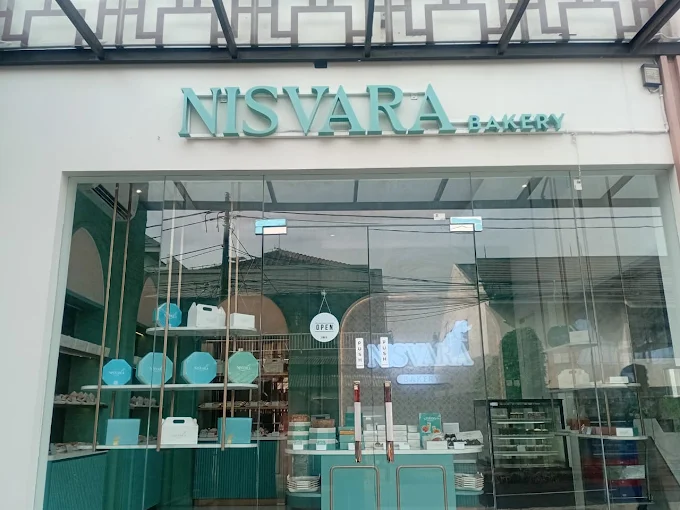
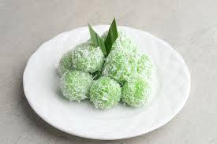

Selamat Datang di Website Portofolio
Website ini merupakan media pendukung untuk menampilkan hasil Ujian Praktik Terintegrasi. Konten utama pada website ini adalah video broadcasting pembelajaran yang berisi penyampaian teks argumentasi Bahsa Indonesia secara lisan.
Tentang Website Ini
Website ini merupakan website portofolio digital yang berisi hasil karya dan pembelajaran saya selama mengikuti Ujian Praktik Terintegrasi.
Tujuan Pembuatan Website
Tujuan pembuatan website ini adalah untuk menampilkan karya yang telah saya buat serta melatih kemampuan saya dalam membuat website sederhana menggunakan HTML.
Topik Argumentasi dan Alasan Pemilihan
Topik teks argumentasinya adalah Sejarah Bakery dan Pengalaman Internship di Nisvara Bakery, karena menurut saya itu topik yang menarik.
Harapan dari Video
Saya harap semua menikmati videonya dan maaf bila ada kesalahan.
Refleksi, Kesan, dan Pesan
Kesan saya saat belajar di SMPIT Al-haraki, saya merasa sangat senang dan beruntung bisa belajar dan bertemu teman maupun guru di sini dan saya berharap saya dapat meningkatkan belajar saya maupun itu di Al-Haraki atau sekolah lain.



